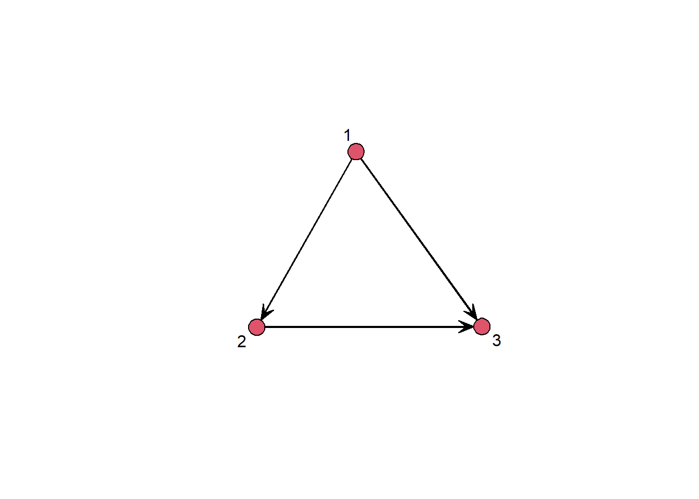

The Centrality measures, measure the centrality of the location of an actor in the network. In the following, we will look at the most important ones, degree centrality, closeness centrality, betweeness centrality and eigenvector centrality. There are other centrality measures, but these are mostly based on the four mentioned.
Degree Centrality
The degree centrality of a node is the sum of its direct relations in the network. In other words, the degree centrality CD of a node n i is the sum of the edges xij ending in this node.
In the following, we will make use of the statnet package and the florentine data set to showcase different Centrality measures.
The florentine data set contains the marriage and business ties among Renaissance Florentine families. The data is originally from Padgett (1994) via UCINET and stored as a network object.
In statnet there is the degree function, which we pass the marriage network from the florentine data type. In the function, the graph mode is also specified via gmode, as the marriage network is undirected.
By executing the function, we get a vector in the variable deg that has as many elements as there are nodes in the network. The elements are centrality scores for each node in the network. In our example, we get 16 values.
We can access the names via vertex.names and associate the centrality stores with the names.
To get a general overview of the degree centralitys in the network, we can use the hist function to display the degree distribution in a histogram.
You can re scale these degree centrality scores with the additional argument rescale =T. However, this does not re scale with the theoretical maximum of the network, but the scores are re scaled so that the sum of the scores together is 1.
In the last line of code, the network is plotted and the size of the nodes is scaled according to the centrality scores. The scores stored in deg_scaled are passed to the vertex.cex argument in the gplot function and further adjusted to obtain an appealing representation. We add .3 to all values to display nodes with degree 0 and multiply the degree values so that the nodes are not displayed too small.
With directed graphs, a distinction is made between incoming and outgoing contacts.
Indegree represents the incoming contacts indicating the prominence of a node and is a simple indicator of prestige. An Actor is a sink because he only receives edges but does not send any.
Outdegree represents outgoing contacts indicating the influence of a node on others. It has much to distribute and reaches many other nodes. An Actor is a source because she only sends edges and does not receive any.
In the following we create our own directed example network, as we have already done in previous scripts. The code generates a simple 3 node and 3 edge example network.
For directed networks, we now have to specify gmode to digraph in the degree function. In addition, we specify in cmode which degree is to be calculated. freeman calculates the sum of the in and outdegrees per actor and indegree as well as outdegree the measure of the same name.
net <-network.initialize(3) add.edges(net, c(1,1,2), c(2,3,3)) gplot(net, displaylabels = T)

degree(net, gmode ="digraph", cmode ="freeman")
[1] 2 2 2
degree(net, gmode ="digraph", cmode ="indegree")
[1] 0 1 2
degree(net, gmode ="digraph", cmode ="outdegree")
[1] 2 1 0
Closeness Centrality
The concept of closeness describes the relative proximity of one actor to all the others. In contrast to degree, indirect contacts are also included in the calculation. Closeness is the inverse of the nodes farness, were the farness is the sum of the individual geodesic distances to all other nodes in the graph.
Similar to the calculation of the degree centrality, there is a separate function for closeness centrality. The closeness function is specified in a similar way to the degree function, first the network is passed, gmode is specified and cmode is specified how this measure is to be calculated. If the information is available, the directed ties can be included or ignored.
In the last section we saw that due to an isolet which has infinity in the calculation of closeness scores, no usable results were generated (since it is divided by infinity and this results in 0).
One solution is to remove isolets from the network. There is an isolates function which returns the id of the isolets nodes.
We create a vector of all nodes in the flomarriage network and delete all isolates from the vector using the isolet function. This vector is now stored in vnoisol.
With the %s% subsetting symbol we say that we want to generate a subset from the network in which only the nodes from the vector vnoisol are located.
If we calculate closeness with the network without isolates we get reasonable results.
Betweenness measures the network flow that a given node controls by being an intermediary on the shortest paths between other pairs of nodes. Assumption: indivisible traffic to a target that always chooses the shortest path and chooses randomly in case of alternative shortest paths (also relies on geodesics). Betweenness is good for capturing frequency of traffic based on transfers.
There is also a separate function for betweeness centrality, which is specified in the same way as the previous functions.
We can see in the histogram that we get high betweeness values even in small networks and that it makes sense to normalize values here.
bet <-betweenness(flomarriage, gmode ="graph") bet
Normalize by Theoretical Maximum Value (Star Graph)
To normalize with the theoretical maximum of a network, we only need the network size, which we get via the function network.size.
The formula normalizes the previously calculated betweenes values with the theoretical maximum possible.
N <-network.size(flomarriage) bet_norm <- bet / ((N-1)*(N-2)/2)
Eigenvector Centrality
The Eigenvector centrality of each node is determined by the centrality of the nodes it is connected to. A high eigenvector score means that a node is connected to many nodes who themselves have high scorers.
Nodes with powerfull friends should also be powerfull themselves. The evcent function calculates the eigenvector centrality scores. These values are primarily interesting in node comparisons.
eig <-evcent(flomarriage)
Graph-Level Centralization
The centralization of a network is an expression of the concentration of edges on a few or even only one actor.
Degree centralization measures the observed distribution of the edges in relation to the maximum possible concentration of the edges for a given number of nodes.
Betweenness centralization of the network measures the overall tendency of the network to be connected through a single intermediary.
In both cases, a 1 would represent a maximum concentration on one person (star) and a 0 a perfectly uniform distribution (circle).
The centralization function can calculate both discussed centralizations, again the network is specified, either degree or betweeness is specified and mode is set to graph (since no directed network)
Single centralization measures are usually not very helpful, they are used for example to compare networks.
In the following, a user specified helper function is loaded via the source function, which simply executes an r script. In this case, the script contains two functions that structure a comparison plot.
Various centrality measures are then calculated and displayed in a pairsplot.
To arrange several plots in one plot, the par function is used to pass framework conditions for the layout.
The position for each node is saved in net_layout and then retrieved in the different plots with coord=net_layout. This enables a better comparison between the dimensions.
The plots are then inserted one after the other in the prescribed par design.
source("helpers/pairsplot.R")pairs(cbind(deg, clos_suminv, bet, eig), upper.panel = panel.cor, diag.panel = panel.hist)
Warning in par(usr): argument 1 does not name a graphical parameter
Warning in par(usr): argument 1 does not name a graphical parameter
Warning in par(usr): argument 1 does not name a graphical parameter
Warning in par(usr): argument 1 does not name a graphical parameter
Warning in par(usr): argument 1 does not name a graphical parameter
Warning in par(usr): argument 1 does not name a graphical parameter
Warning in par(usr): argument 1 does not name a graphical parameter
Warning in par(usr): argument 1 does not name a graphical parameter
Warning in par(usr): argument 1 does not name a graphical parameter
Warning in par(usr): argument 1 does not name a graphical parameter